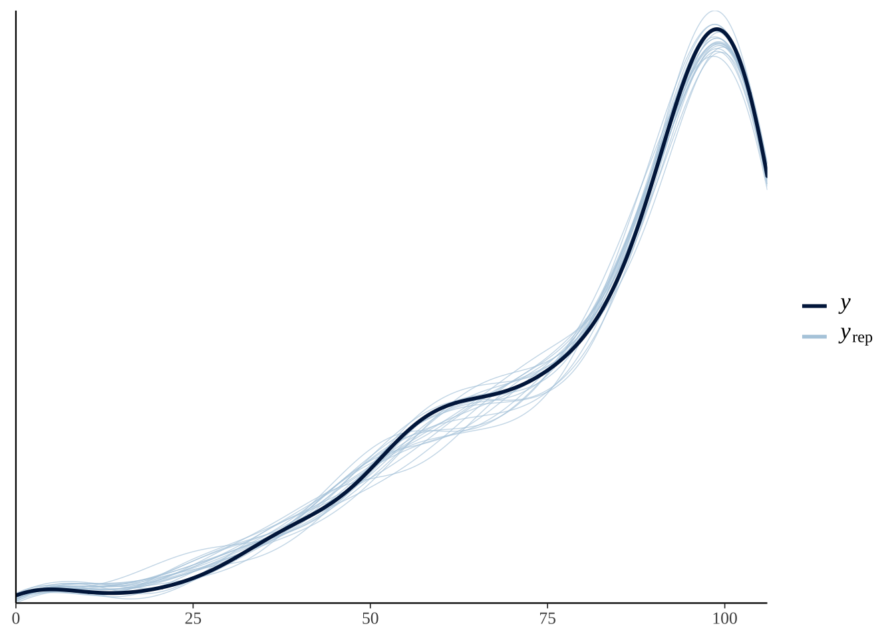

Analysis of Experiment 3
Last updated: 2020-08-21
Checks: 7 0
Knit directory: social_immunity/
This reproducible R Markdown analysis was created with workflowr (version 1.6.2). The Checks tab describes the reproducibility checks that were applied when the results were created. The Past versions tab lists the development history.
Great! Since the R Markdown file has been committed to the Git repository, you know the exact version of the code that produced these results.
Great job! The global environment was empty. Objects defined in the global environment can affect the analysis in your R Markdown file in unknown ways. For reproduciblity it’s best to always run the code in an empty environment.
The command set.seed(20191017) was run prior to running the code in the R Markdown file. Setting a seed ensures that any results that rely on randomness, e.g. subsampling or permutations, are reproducible.
Great job! Recording the operating system, R version, and package versions is critical for reproducibility.
Nice! There were no cached chunks for this analysis, so you can be confident that you successfully produced the results during this run.
Great job! Using relative paths to the files within your workflowr project makes it easier to run your code on other machines.
These are the previous versions of the repository in which changes were made to the R Markdown (analysis/experiment3.Rmd) and HTML (docs/experiment3.html) files. If you’ve configured a remote Git repository (see ?wflow_git_remote), click on the hyperlinks in the table below to view the files as they were in that past version.
| File | Version | Author | Date | Message |
|---|---|---|---|---|
| Rmd | 7ec6dde | lukeholman | 2020-08-21 | remake before submission |
| html | 7bf607f | lukeholman | 2020-05-02 | Build site. |
| html | 3df58c2 | lukeholman | 2020-05-02 | Build site. |
| Rmd | cdcb0d6 | lukeholman | 2020-05-02 | tweaks |
| html | 2994a41 | lukeholman | 2020-05-02 | Build site. |
| html | d166566 | lukeholman | 2020-05-02 | Build site. |
| Rmd | ec0bd88 | lukeholman | 2020-05-02 | tweak colours |
| html | fedef8f | lukeholman | 2020-05-02 | Build site. |
| html | 4cb9bc1 | lukeholman | 2020-05-02 | Build site. |
| Rmd | 14377be | lukeholman | 2020-05-02 | tweak colours |
| html | fa8c179 | lukeholman | 2020-05-02 | Build site. |
| Rmd | f188968 | lukeholman | 2020-05-02 | tweak colours |
| html | f188968 | lukeholman | 2020-05-02 | tweak colours |
| html | 2227713 | lukeholman | 2020-05-02 | Build site. |
| html | 1c9a1c3 | lukeholman | 2020-05-02 | Build site. |
| Rmd | 3d21d6a | lukeholman | 2020-05-02 | wflow_publish("*", republish = T) |
| html | 3d21d6a | lukeholman | 2020-05-02 | wflow_publish("*", republish = T) |
| html | d56c18f | lukeholman | 2020-04-30 | Build site. |
| Rmd | c895d8d | lukeholman | 2020-04-30 | new font |
| html | 93c487a | lukeholman | 2020-04-30 | Build site. |
| html | 5c45197 | lukeholman | 2020-04-30 | Build site. |
| html | 4bd75dc | lukeholman | 2020-04-30 | Build site. |
| Rmd | 12953af | lukeholman | 2020-04-30 | test new theme |
| html | d6437a5 | lukeholman | 2020-04-25 | Build site. |
| html | e58e720 | lukeholman | 2020-04-25 | Build site. |
| html | 71b6160 | lukeholman | 2020-04-25 | Build site. |
| Rmd | 76a317d | lukeholman | 2020-04-25 | tweaks |
| html | 2235ae4 | lukeholman | 2020-04-25 | Build site. |
| Rmd | 99649a7 | lukeholman | 2020-04-25 | tweaks |
| html | 99649a7 | lukeholman | 2020-04-25 | tweaks |
| html | 0ede6e3 | lukeholman | 2020-04-24 | Build site. |
| Rmd | a1f8dc2 | lukeholman | 2020-04-24 | tweaks |
| html | a1f8dc2 | lukeholman | 2020-04-24 | tweaks |
| html | 8c3b471 | lukeholman | 2020-04-21 | Build site. |
| Rmd | 1ce9e19 | lukeholman | 2020-04-21 | First commit 2020 |
| html | 1ce9e19 | lukeholman | 2020-04-21 | First commit 2020 |
| Rmd | aae65cf | lukeholman | 2019-10-17 | First commit |
| html | aae65cf | lukeholman | 2019-10-17 | First commit |
Load data and R packages
# All but 1 of these packages can be easily installed from CRAN.
# However it was harder to install the showtext package. On Mac, I did this:
# installed 'homebrew' using Terminal: ruby -e "$(curl -fsSL https://raw.githubusercontent.com/Homebrew/install/master/install)"
# installed 'libpng' using Terminal: brew install libpng
# installed 'showtext' in R using: devtools::install_github("yixuan/showtext")
library(showtext)
library(brms)
library(bayesplot)
library(tidyverse)
library(gridExtra)
library(kableExtra)
library(bayestestR)
library(cowplot)
library(tidybayes)
library(scales)
source("code/helper_functions.R")
# set up nice font for figure
nice_font <- "Lora"
font_add_google(name = nice_font, family = nice_font, regular.wt = 400, bold.wt = 700)
showtext_auto()
experiment3 <- read_csv("data/clean_data/experiment_3.csv")
expt3_counts <- experiment3 %>%
group_by(treatment, pairID, hive) %>%
summarise(n_touching = sum(touching),
n_not_touching = sum(touching== 0),
percent = n_touching / (n_touching + n_not_touching)) %>%
ungroup() %>%
filter(!is.na(n_touching)) %>%
mutate(treatment = factor(treatment, c("Ringers", "LPS"))) %>%
mutate(hive = C(factor(hive), sum)) # sum coding for hivetime <- experiment3 %>%
group_by(treatment, hive, minute) %>%
summarise(n = sum(touching),
total = n(),
prop = n / total)
time %>%
ggplot(aes(minute, prop, colour = treatment)) +
geom_line() +
facet_wrap(~ hive)
repeated <- brm(touching ~ treatment * hive * minute + (minute | pairID),
prior = prior(normal(0, 1.5), class = "b"),
iter = 4000,
data = experiment3 %>%
mutate(minute = as.numeric(scale(minute))), family = "bernoulli")
new <- experiment3 %>%
mutate(minute = as.numeric(scale(minute))) %>%
select(hive, treatment, minute) %>% distinct()
data.frame(new, pred=predict(gam_model, newdata = new, re.form = NA, type = "response", se.fit =T)) %>%
ggplot(aes(minute, pred, colour = treatment)) +
geom_line() +
facet_wrap(~ hive)Inspect the raw data
Sample sizes by treatment
sample_sizes <- expt3_counts %>%
group_by(treatment) %>%
summarise(n = n()) `summarise()` ungrouping output (override with `.groups` argument)sample_sizes %>%
kable() %>% kable_styling(full_width = FALSE)| treatment | n |
|---|---|
| Ringers | 220 |
| LPS | 219 |
Sample sizes by treatment and hive
expt3_counts %>%
group_by(hive, treatment) %>%
summarise(n = n()) %>%
kable() %>% kable_styling(full_width = FALSE)`summarise()` regrouping output by 'hive' (override with `.groups` argument)| hive | treatment | n |
|---|---|---|
| Arts | Ringers | 50 |
| Arts | LPS | 50 |
| Garden | Ringers | 70 |
| Garden | LPS | 70 |
| Skylab | Ringers | 50 |
| Skylab | LPS | 49 |
| Zoology | Ringers | 50 |
| Zoology | LPS | 50 |
Means and standard errors
expt3_counts %>%
group_by(hive, treatment) %>%
summarise(pc = mean(100 * percent),
SE = sd(percent) /sqrt(n()),
n = n()) %>%
rename(`% observations in which bees were in close contact` = pc,
Hive = hive, Treatment = treatment) %>%
kable(digits = 3) %>% kable_styling(full_width = FALSE) %>%
column_spec(3, width = "2in")`summarise()` regrouping output by 'hive' (override with `.groups` argument)| Hive | Treatment | % observations in which bees were in close contact | SE | n |
|---|---|---|---|---|
| Arts | Ringers | 69.509 | 0.036 | 50 |
| Arts | LPS | 72.547 | 0.033 | 50 |
| Garden | Ringers | 76.752 | 0.033 | 70 |
| Garden | LPS | 68.895 | 0.037 | 70 |
| Skylab | Ringers | 70.509 | 0.040 | 50 |
| Skylab | LPS | 65.653 | 0.034 | 49 |
| Zoology | Ringers | 84.075 | 0.021 | 50 |
| Zoology | LPS | 73.019 | 0.037 | 50 |
Histogram of the results
Note that bees more often spent close to 100% of the observation period in contact in the control group, relative to the group treated with LPS.
histo_data <- expt3_counts %>%
left_join(sample_sizes, by = "treatment") %>%
arrange(treatment) %>%
mutate(treatment = factor(paste(treatment, " (n = ", n, ")", sep = ""),
unique(paste(treatment, " (n = ", n, ")", sep = ""))))
raw_histogram <- histo_data %>%
filter(grepl("Ringers", treatment)) %>%
ggplot(aes(100 * percent,
fill = treatment)) +
geom_histogram(data = histo_data %>%
filter(grepl("LPS", treatment)),
mapping = aes(y = ..density..),
alpha = 0.5, bins = 11, colour = "black", linetype = 2) +
geom_histogram(mapping = aes(y = ..density..),
alpha = 0.5, bins = 11,
colour = "black") +
scale_fill_brewer(palette = "Set1",
direction = 1, name = "Treatment") +
xlab("% Time in close contact") + ylab("Density") +
theme_bw() +
theme(legend.position = c(0.37, 0.832),
legend.background = element_rect(fill = scales::alpha('white', 0.7)),
text = element_text(family = nice_font))
rm(histo_data)
raw_histogram
Binomial model of time spent in contact
Run the models
Fit three different binomial models, where the response is either a 0 (if bees were not in contact) or 1 (if they were).
if(!file.exists("output/exp3_model.rds")){
exp3_model_v1 <- brm(
n_touching | trials(n) ~ treatment * hive + (1 | pairID),
data = expt3_counts %>% mutate(n = n_touching + n_not_touching),
prior = c(set_prior("normal(0, 3)", class = "b")),
family = "binomial", save_all_pars = TRUE, sample_prior = TRUE,
chains = 4, cores = 1, iter = 20000, seed = 1)
exp3_model_v2 <- brm(
n_touching | trials(n) ~ treatment + hive + (1 | pairID),
data = expt3_counts %>% mutate(n = n_touching + n_not_touching),
prior = c(set_prior("normal(0, 3)", class = "b")),
family = "binomial", save_all_pars = TRUE, sample_prior = TRUE,
chains = 4, cores = 1, iter = 20000, seed = 1)
exp3_model_v3 <- brm(
n_touching | trials(n) ~ hive + (1 | pairID),
data = expt3_counts %>% mutate(n = n_touching + n_not_touching),
prior = c(set_prior("normal(0, 3)", class = "b")),
family = "binomial", save_all_pars = TRUE, sample_prior = TRUE,
chains = 4, cores = 1, iter = 20000, seed = 1)
posterior_model_probabilities <- tibble(
Model = c("treatment * hive + observation_time_minutes",
"treatment + hive + observation_time_minutes",
"hive + observation_time_minutes"),
post_prob = as.numeric(post_prob(exp3_model_v1,
exp3_model_v2,
exp3_model_v3))) %>%
arrange(-post_prob)
saveRDS(exp3_model_v2, "output/exp3_model.rds") # save the top model, treatment + hive
saveRDS(posterior_model_probabilities, "output/exp3_post_prob.rds")
}
exp3_model <- readRDS("output/exp3_model.rds")
model_probabilities <- readRDS("output/exp3_post_prob.rds")Posterior model probabilites
model_probabilities %>%
kable(digits = 3) %>% kable_styling(full_width = FALSE)| Model | post_prob |
|---|---|
| hive + observation_time_minutes | 0.720 |
| treatment + hive + observation_time_minutes | 0.278 |
| treatment * hive + observation_time_minutes | 0.001 |
Fixed effects from the top model
Raw output of the treatment + hive model
summary(exp3_model) Family: binomial
Links: mu = logit
Formula: n_touching | trials(n) ~ treatment + hive + (1 | tube)
Data: expt3_counts %>% mutate(n = n_touching + n_not_tou (Number of observations: 439)
Samples: 4 chains, each with iter = 20000; warmup = 10000; thin = 1;
total post-warmup samples = 40000
Group-Level Effects:
~tube (Number of levels: 439)
Estimate Est.Error l-95% CI u-95% CI Rhat Bulk_ESS Tail_ESS
sd(Intercept) 2.02 0.08 1.87 2.19 1.00 3481 6133
Population-Level Effects:
Estimate Est.Error l-95% CI u-95% CI Rhat Bulk_ESS Tail_ESS
Intercept 1.68 0.14 1.40 1.96 1.00 1542 2621
treatmentLPS -0.37 0.20 -0.76 0.02 1.00 1508 3329
hive1 -0.20 0.17 -0.54 0.14 1.01 1423 2879
hive2 0.14 0.16 -0.16 0.46 1.00 1302 2268
hive3 -0.23 0.18 -0.58 0.12 1.00 1245 2518
Samples were drawn using sampling(NUTS). For each parameter, Bulk_ESS
and Tail_ESS are effective sample size measures, and Rhat is the potential
scale reduction factor on split chains (at convergence, Rhat = 1).Formatted brms output for Table S5
The code chunk below wrangles the raw output of the summary() function for brms models into a more readable table of results, and also adds ‘Bayesian p-values’ (i.e. the posterior probability that the true effect size has the same sign as the reported effect).
Table S5: Table summarising the posterior estimates of each fixed effect in the best-fitting model of Experiment 3 that contained the treatment effect. This was a binomial model where the response variable was 0 for observations in which bees were not in close contact, and 1 when they were. ‘Treatment’ is a fixed factor with two levels, and the effect of LPS shown here is expressed relative to the ‘Ringers’ treatment. ‘Hive’ was a fixed factor with four levels; unlike for treatment, we modelled hive using deviation coding, such that the intercept term represents the mean across all hives (in the Ringers treatment), and the three hive terms represent the deviation from this mean for three of the four hives. The model also included one random effect, ‘pair ID’, which grouped observations made on each pair of bees, preventing pseudoreplication. The \(PP\) column gives the posterior probability that the true effect size is opposite in sign to what is reported in the Estimate column, similarly to a \(p\)-value.
tableS5 <- get_fixed_effects_with_p_values(exp3_model) %>%
mutate(mu = map_chr(str_extract_all(Parameter, "mu[:digit:]"), ~ .x[1]),
Parameter = str_remove_all(Parameter, "mu[:digit:]_"),
Parameter = str_replace_all(Parameter, "treatment", "Treatment: "),
Parameter = str_replace_all(Parameter, "observation_time_minutes", "Observation duration (minutes)")) %>%
arrange(mu) %>%
select(-mu, -Rhat, -Bulk_ESS, -Tail_ESS)
names(tableS5)[3:5] <- c("Est. Error", "Lower 95% CI", "Upper 95% CI")
saveRDS(tableS5, file = "figures/tableS5.rds")
tableS5 %>%
kable(digits = 3) %>%
kable_styling(full_width = FALSE) | Parameter | Estimate | Est. Error | Lower 95% CI | Upper 95% CI | PP | |
|---|---|---|---|---|---|---|
| Intercept | 1.678 | 0.141 | 1.401 | 1.960 | 0.000 | *** |
| Treatment: LPS | -0.369 | 0.199 | -0.763 | 0.022 | 0.033 | * |
| hive1 | -0.198 | 0.175 | -0.539 | 0.137 | 0.130 | |
| hive2 | 0.145 | 0.158 | -0.157 | 0.462 | 0.180 | |
| hive3 | -0.227 | 0.179 | -0.582 | 0.121 | 0.102 |
Plotting estimates from the model
new <- expt3_counts %>%
select(treatment) %>% distinct() %>%
mutate(n = 100, key = paste("V", 1:n(), sep = ""),
hive = NA)
plotting_data <- as.data.frame(fitted(exp3_model,
newdata=new, re_formula = NA, summary = FALSE))
names(plotting_data) <- c("LPS", "Ringers")
plotting_data <- plotting_data %>% gather(treatment, percent_time_in_contact)
panel_c_colour <- "#CC79A7"
dot_plot <- plotting_data %>%
mutate(treatment = factor(treatment, c("Ringers", "LPS"))) %>%
ggplot(aes(percent_time_in_contact, treatment)) +
stat_dotsh(quantiles = 100, fill = "grey40", colour = "grey40") +
stat_pointintervalh(
mapping = aes(colour = treatment, fill = treatment),
.width = c(0.5, 0.95),
position = position_nudge(y = -0.07),
point_colour = "grey26", pch = 21, stroke = 0.4) +
xlab("Mean % time in close contact") + ylab("Treatment") +
scale_colour_brewer(palette = "Pastel1",
direction = -1, name = "Treatment") +
scale_fill_brewer(palette = "Pastel1",
direction = -1, name = "Treatment") +
theme_bw() +
coord_cartesian(ylim=c(1.4, 2.4)) +
theme(
text = element_text(family = nice_font),
strip.background = element_rect(fill = "#eff0f1"),
panel.grid.major.y = element_blank(),
legend.position = "none"
)
# positive effect = odds of this outcome are higher for trt2 than trt1 (put control as trt1)
get_log_odds <- function(trt1, trt2){
log((trt2 / (1 - trt2) / (trt1 / (1 - trt1))))
}
LOR <- plotting_data %>%
mutate(posterior_sample = rep(1:(n()/2), 2)) %>%
spread(treatment, percent_time_in_contact) %>%
mutate(LOR = get_log_odds(Ringers/100, LPS/100)) %>%
select(LOR)
LOR_plot <- LOR %>%
ggplot(aes(LOR, y =1)) +
geom_vline(xintercept = 0, linetype = 2) +
stat_dotsh(quantiles = 100, fill = "grey40", colour = "grey40") +
stat_pointintervalh(
colour = panel_c_colour, fill = panel_c_colour,
.width = c(0.5, 0.95),
position = position_nudge(y = -0.1),
point_colour = "grey26", pch = 21, stroke = 0.4) +
coord_cartesian(ylim=c(0.86, 2)) +
xlab("Effect of LPS on mean\n% time in close contact (LOR)") +
ylab("Posterior density") +
theme_bw() +
theme(
text = element_text(family = nice_font),
axis.text.y = element_blank(),
axis.ticks.y = element_blank(),
panel.grid.major.y = element_blank(),
panel.grid.minor.y = element_blank(),
legend.position = "none"
)
p <- cowplot::plot_grid(raw_histogram,
dot_plot, LOR_plot, labels = c("A", "B", "C"),
nrow = 1, align = 'h', axis = 'l')
ggsave(plot = p, filename = "figures/fig3.pdf", height = 3.2, width = 8.6)
p
Figure 3: Panel A shows the frequency distribution of the % time in close contact, for pairs of bees from the LPS treatment and the Ringers control. Panel B shows the posterior estimates of the mean % time spent in close contact; the details of the quantile dot plot and error bars are the same as described for Figure 1. Panel C shows the effect size (LOR; log odds ratio) associated with the difference in means in Panel B.
Hypothesis testing and effect sizes
Table S6: Pairs in which one bee had received LPS were observed in close contact less frequently than pairs in which one bee had received Ringers solution.
get_log_odds <- function(trt1, trt2){
log((trt2 / (1 - trt2) / (trt1 / (1 - trt1))))
}
my_summary <- function(df) {
diff <- (df %>% pull(Ringers)) - (df %>% pull(LPS))
LOR <- get_log_odds((df %>% pull(Ringers))/100,
(df %>% pull(LPS))/100)
p <- 1 - (diff %>% bayestestR::p_direction() %>% as.numeric())
diff <- diff %>% posterior_summary() %>% as_tibble()
LOR <- LOR %>% posterior_summary() %>% as_tibble()
output <- rbind(diff, LOR) %>%
mutate(p=p,
Metric = c("Absolute difference in % time in close contact",
"Log odds ratio")) %>%
select(Metric, everything()) %>%
mutate(p = format(round(p, 4), nsmall = 4))
output$p[1] <- " "
output
}
plotting_data %>%
as_tibble() %>%
mutate(sample = rep(1:(n() / 2), 2)) %>%
spread(treatment, percent_time_in_contact) %>%
mutate(difference = LPS - Ringers) %>%
my_summary() %>%
mutate(` ` = ifelse(p < 0.05, "\\*", ""),
` ` = replace(` `, p < 0.01, "**"),
` ` = replace(` `, p < 0.001, "***"),
` ` = replace(` `, p == " ", "")) %>%
kable(digits = 3) %>% kable_styling() | Metric | Estimate | Est.Error | Q2.5 | Q97.5 | p | |
|---|---|---|---|---|---|---|
| Absolute difference in % time in close contact | 5.538 | 3.006 | -0.330 | 11.495 | ||
| Log odds ratio | -0.369 | 0.199 | -0.763 | 0.022 | 0.0328 | * |
sessionInfo()R version 4.0.0 (2020-04-24)
Platform: x86_64-apple-darwin17.0 (64-bit)
Running under: macOS Catalina 10.15.4
Matrix products: default
BLAS: /Library/Frameworks/R.framework/Versions/4.0/Resources/lib/libRblas.dylib
LAPACK: /Library/Frameworks/R.framework/Versions/4.0/Resources/lib/libRlapack.dylib
locale:
[1] en_AU.UTF-8/en_AU.UTF-8/en_AU.UTF-8/C/en_AU.UTF-8/en_AU.UTF-8
attached base packages:
[1] stats graphics grDevices utils datasets methods base
other attached packages:
[1] scales_1.1.1 tidybayes_2.0.3 cowplot_1.0.0 bayestestR_0.6.0 kableExtra_1.1.0 gridExtra_2.3
[7] forcats_0.5.0 stringr_1.4.0 dplyr_1.0.0 purrr_0.3.4 readr_1.3.1 tidyr_1.1.0
[13] tibble_3.0.1 ggplot2_3.3.1 tidyverse_1.3.0 bayesplot_1.7.2 brms_2.13.0 Rcpp_1.0.4.6
[19] showtext_0.8-1 showtextdb_2.0 sysfonts_0.8.1 workflowr_1.6.2
loaded via a namespace (and not attached):
[1] TH.data_1.0-10 colorspace_1.4-1 ellipsis_0.3.1 ggridges_0.5.2 rsconnect_0.8.16
[6] rprojroot_1.3-2 estimability_1.3 markdown_1.1 base64enc_0.1-3 fs_1.4.1
[11] rstudioapi_0.11 farver_2.0.3 rstan_2.19.3 svUnit_1.0.3 DT_0.13
[16] fansi_0.4.1 mvtnorm_1.1-0 lubridate_1.7.8 xml2_1.3.2 bridgesampling_1.0-0
[21] codetools_0.2-16 splines_4.0.0 knitr_1.29 shinythemes_1.1.2 jsonlite_1.7.0
[26] broom_0.5.6 dbplyr_1.4.4 shiny_1.4.0.2 compiler_4.0.0 httr_1.4.1
[31] emmeans_1.4.7 backports_1.1.7 assertthat_0.2.1 Matrix_1.2-18 fastmap_1.0.1
[36] cli_2.0.2 later_1.0.0 htmltools_0.5.0 prettyunits_1.1.1 tools_4.0.0
[41] igraph_1.2.5 coda_0.19-3 gtable_0.3.0 glue_1.4.1 reshape2_1.4.4
[46] cellranger_1.1.0 vctrs_0.3.0 nlme_3.1-148 crosstalk_1.1.0.1 insight_0.8.4
[51] xfun_0.15 ps_1.3.3 rvest_0.3.5 mime_0.9 miniUI_0.1.1.1
[56] lifecycle_0.2.0 gtools_3.8.2 MASS_7.3-51.6 zoo_1.8-8 colourpicker_1.0
[61] hms_0.5.3 promises_1.1.0 Brobdingnag_1.2-6 parallel_4.0.0 sandwich_2.5-1
[66] inline_0.3.15 RColorBrewer_1.1-2 shinystan_2.5.0 curl_4.3 yaml_2.2.1
[71] loo_2.2.0 StanHeaders_2.21.0-3 stringi_1.4.6 highr_0.8 dygraphs_1.1.1.6
[76] pkgbuild_1.0.8 rlang_0.4.6 pkgconfig_2.0.3 matrixStats_0.56.0 evaluate_0.14
[81] lattice_0.20-41 labeling_0.3 rstantools_2.1.0 htmlwidgets_1.5.1 processx_3.4.2
[86] tidyselect_1.1.0 plyr_1.8.6 magrittr_1.5 R6_2.4.1 generics_0.0.2
[91] multcomp_1.4-13 DBI_1.1.0 withr_2.2.0 pillar_1.4.4 haven_2.3.1
[96] whisker_0.4 xts_0.12-0 survival_3.1-12 abind_1.4-5 modelr_0.1.8
[101] crayon_1.3.4 arrayhelpers_1.1-0 rmarkdown_2.3 readxl_1.3.1 grid_4.0.0
[106] blob_1.2.1 callr_3.4.3 git2r_0.27.1 threejs_0.3.3 webshot_0.5.2
[111] reprex_0.3.0 digest_0.6.25 xtable_1.8-4 httpuv_1.5.3.1 stats4_4.0.0
[116] munsell_0.5.0 viridisLite_0.3.0 shinyjs_1.1